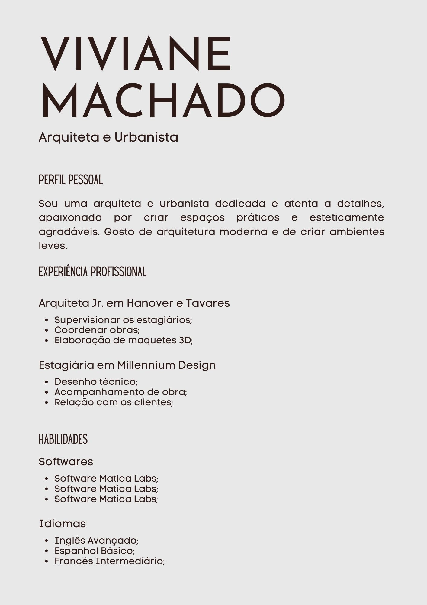
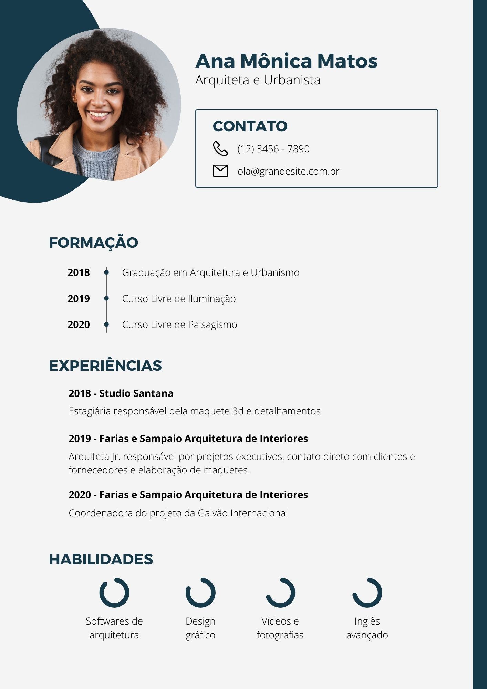

Dicas para Curriculos
Para quem busca uma oportunidade no mercado de trabalho ou na vida acadêmica, o currículo é o cartão de visitas do candidato, e muitas vezes, o primeiro contato entre as partes. Por isso, é importante que o currículo seja bem elaborado e transmita todas as informações necessárias de forma clara e objetiva. O mural de currículos da FATEC ZL oferece dicas e inspirações de como criar seu currículo e causar uma boa impressão!
Formatação
- Deve ser simples, organizado e fácil de ler. Use uma fonte padrão, de tamanho legível. Evite utilizar muitas cores, tamanhos ou fontes diferentes. Para destacar informações, utilize negrito ou itálico.
- Mantenha-o breve e direto ao ponto, com uma ou duas páginas.

Informações
- Seu nome completo, telefone e e-mail para contato assim como seu endereço residencial devem estar presentes no currículo.
- A introdução deve ser breve e direta, podendo ser um resumo de realizações profissionais e experiências mais relevantes para a vaga.
- Destaque as habilidades relevantes que possui, incluindo habilidades técnicas e comportamentais.
- Liste todas as suas experiências de trabalho em ordem decrescente, da mais atual para a mais antiga. Inclua suas responsabilidades e realizações durante o período.
- Liste sua formação acadêmica, incluindo todos os cursos relevantes, diplomas e certificados.
Atenção
- Revise e edite cuidadosamente para garantir que não haja erros de ortografia ou gramática. Peça a um amigo ou mentor para revisar.
- Atualize-o regularmente: atualize seu currículo regularmente para incluir novas experiências e habilidades adquiridas ao longo do tempo.
